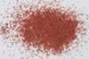

|
|
(For further information on spectroscopy, see:
http://speclab.cr.usgs.gov)
TITLE: Cinnabar HS133 DESCRIPT
DOCUMENTATION_FORMAT: MINERAL
SAMPLE_ID: HS133
MINERAL_TYPE: Sulfide
MINERAL: Cinnabar
FORMULA: HgS
FORMULA_HTML: HgS
COLLECTION_LOCALITY: Manhattan, Nevada
ORIGINAL_DONOR: Hunt and Salisbury Collection
CURRENT_SAMPLE_LOCATION: USGS Denver Spectroscopy Laboratory
ULTIMATE_SAMPLE_LOCATION: USGS Denver Spectroscopy Laboratory
SAMPLE_DESCRIPTION:
Trimorphous with Metacinnabar and Hypercinnabar.
This sample is impure, and contains 0.6% iron by weight. This is enough iron to be present as the oxide, however, and to provide the characteristic absorptions near 0.85µm. The sample also contains bound hydrated water (1.4, 1.9, and 2.2-2.4µm absorptions) attached to the ferric oxide.
Hunt, G.R., J.W. Salisbury, C.J. Lenhoff, 1971, Visible and Near-Infrared spectra of Minerals and Rocks: IV. Sulfides and Sulfates. Mod. Geol. 3, pp 1-14.
IMAGE_OF_SAMPLE:

END_SAMPLE_DESCRIPTION.
XRD_ANALYSIS:
Cinnabar - major component
No other identifiable components
No sign of iron oxide
Konnert, Judith and Marta Flohr, 1992, unpublished data, USGS Reston, VA.
END_XRD_ANALYSIS.
COMPOSITIONAL_ANALYSIS_TYPE: None # XRF, EM(WDS), ICP(Trace), WChem
COMPOSITION_TRACE: None
COMPOSITION_DISCUSSION:
END_COMPOSITION_DISCUSSION.
MICROSCOPIC_EXAMINATION:
mode:
60 vol% cinnabar
40 vol% cinnabar coated quartz and feldspar
bimodal grain size distribution:
60 vol% 199 µm cinnabar
5 vol% 10 µm cinnabar coating other grains
normalized avg. grain size of cinnabar = 183 µm
grain size feld/qtz = 199 µm
Coatings of cinnabar on feld/qtz grains avg. about 20-30% of felds/qtz surface. Blood red color, red translucent, multiple good cleavages. All consistent with cinnabar. G. Swayze.
END_MICROSCOPIC_EXAMINATION.
SPECTROSCOPIC_DISCUSSION:
END_SPECTROSCOPIC_DISCUSSION.
SPECTRAL_PURITY: 1c2d3d4d # 1= 0.2-3, 2= 1.5-6, 3= 6-25, 4= 20-150 microns
| LIB_SPECTRA_HED: | where | Wave Range | Av_Rs_Pwr | Comment |
|---|---|---|---|---|
| LIB_SPECTRA: | splib04a r 1053 | 0.2-3.0µm | 200 | g.s.= 184 µm |
| LIB_SPECTRA: | splib05a r 1884 | 0.2-3.0µm | 200 | g.s.= |
| LIB_SPECTRA: | splib06a r 5270 | g.s.= | ||
| LIB_SPECTRA: | splib06a r 5282 | g.s.= |
{kind=link}